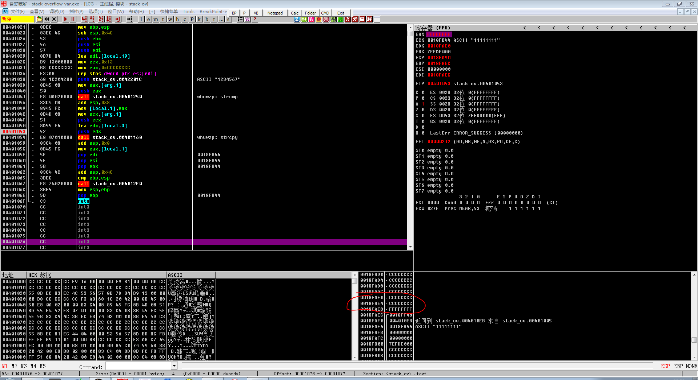
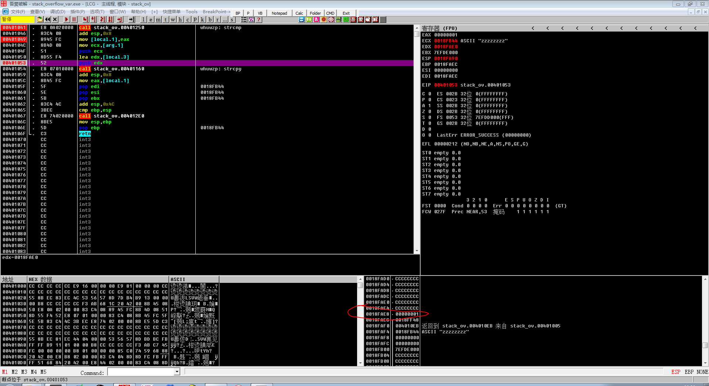
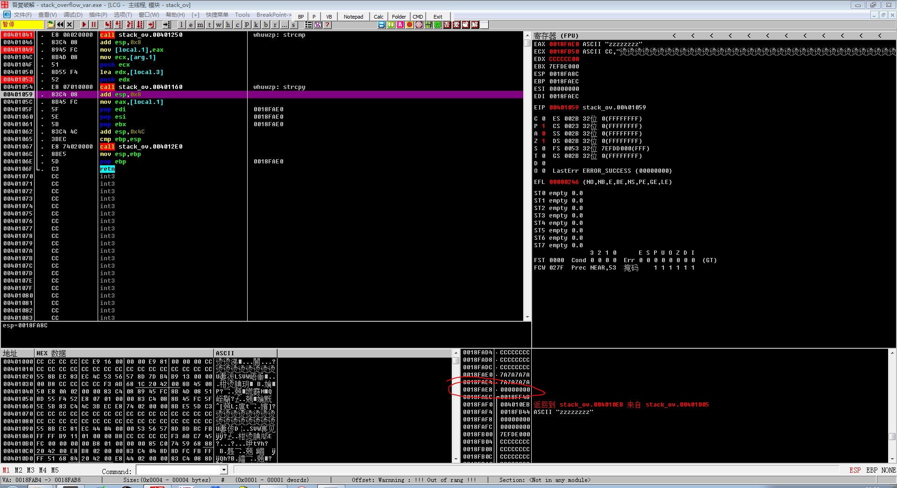

实验一
ida
首先用ida找到关键代码：在记下内存位置，0x0040106E，进入olly
.text:00401046 push offset aPleaseInputPas ; "please input password: "
.text:0040104B call _printf
.text:00401050 lea eax, [esp+404h+var_400]
.text:00401054 push eax
.text:00401055 push offset aS ; "%s"
.text:0040105A call _scanf
.text:0040105F lea ecx, [esp+40Ch+var_400]
.text:00401063 push ecx
.text:00401064 call sub_401000
.text:00401069 add esp, 10h
.text:0040106C test eax, eax
.text:0040106E jz short loc_40107F
.text:00401070 push offset aIncorrectPassw ; "incorrect password!\n\n"
.text:00401075 call _printf
.text:0040107A add esp, 4
.text:0040107D jmp short loc_401046
.text:0040107F ; ---------------------------------------------------------------------------
.text:0040107F
.text:0040107F loc_40107F: ; CODE XREF: _main+2Ej
.text:0040107F push offset aCongratulation ; "Congratulation! You have passed the ver"...
.text:00401084 call _printf
ollydbg
快捷键ctrl+g: 0040106E，跳转至关键代码处修改
找到基本逻辑，按";"键注释出对应的函数，便于后期查看
并设置断点，按"F2"键设置，便于调试。
我们输入8个1，开始调试，在未进行
strcpy时的[ebp-4]的值为0xFFFFFFFF（strcmp的功能见附录）

- 'strcpy'后的值为0xFFFFFF00，因为buf的8个字节复制为0x31后，由于字符串会自带0x00，所以覆盖了auth变量的末尾
- 我们输入8个z(本节的情况，应该只要ASCII值大于1的ASCII即可)，开始调试，在未进行
strcpy时的[ebp-4]的值为0x00000001（strcmp的功能见附录）

- 'strcpy'后的值为0x00000000，覆盖了auth变量的末尾的0x01

- 刚好是可以通过验证的

附录
strcmp(s1,s2)
比较两字符串的大小（从左往右比较字符的ASCII值），返回值情况如下:
- s1 \< s2, -1（也就是0xFFFFFFFF）
- s1 = s2, 0
- s1 > s2, 1